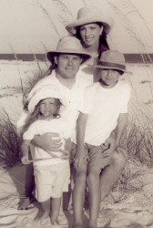
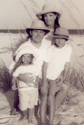

Mother's Memories:
A year or so after Dane's birth I wanted a baby girl but just couldn't get pregnant. When Dane was two he asked if he could have a sister. I told him I wanted one too, but thought Heavenly Father wasn't going to send us any more babies. Dane said he knew what to do and he would pray for a sister. I was so proud of him for trying to help but I had already tried everything I knew just to have my first two children. Our first child died after his birth, which was difficult, and when I was pregnant with Dane I had to stay in bed for seven months! After his birth Dane had breathing complications and I had to leave the hospital without him. I didn't expect to have any more babies. But Dane started praying each day and after a year and a half I became pregnant. I was so sorry for not having faith in the prayers and faith of a child.
After the first month, the nausea in the pregnancy became so bad that I had to sleep outside and have help with childcare and my household chores. Finally I was in so much pain, I couldn't stand in an upright position and had to be taken to the hospital. It was appendicitis and needed to be operated on. The doctor thought I might lose the baby. Just before I was rolled to the operating room, Dennis rushed into the hospital and gave me a blessing. He said I would keep the baby and I knew the Lord was watching over us and our baby would be ok.
After that all was well and I was on my feet for the rest of the pregnancy. I wanted a natural childbirth so Dennis could be with me at the birth. This was new at the time, and only one hospital in San Diego would allow it. We enrolled in some of the first-ever classes for natural childbirth. The day of the birth arrived and it was all going well until it came time to push. I pushed for two hours and nothing happened. Finally the doctor discovered that the baby was on her side. He turned her and she was born.
In 1970, nursing your baby was not done very much. Babies were put on bottles in the hospital nursery right away. I wanted to nurse my baby and said so. I nursed Melanie for over a year and a half until I became pregnant with Natasha. Dane's prayer helped him have five sisters in a row, all with natural childbirth, every two years except the last, Shira, who came almost nine years after the sixth child was born. They are all great friends and had lots of fun growing up together.
I had so much fun raising a little girl. I loved how Melanie was such a charmer to her Daddy and Dane. She said such cute things in adorable little girl ways. She had her own language and other small children understood her perfectly. I loved giving Melanie dolls for Christmas and doing girly things together. I sewed dresses for us to look alike. As the other girls were born, we made quite a fashion statement with mother and many little daughters all dressed in the same kinds of dresses and all with long hair. In the picture to the right Melanie is wearing one of the dresses I made to match mine. It was a no-waistline dress as I was pregnant with Natasha. Her hands were in fists because she was so scared to have the picture taken and had been crying and didn't want to stand before the camera. We told her to be brave, we would be with her and it wouldn't hurt. This was her brave pose. In High School Melanie overcame her fear by taking a photography course and became so good at it that she interned with a world famous photographer. She didn't just go for a big career in photography, as was suggested by the school, but went on to marry and become a mother as well. She still takes photos today for her home-based photography business. She has the unusual talent of being able to bring out the subject's true personality. She also has a talent to make frightened children feel comfortable (probably drawing from her own experience as a one year old). Wherever she has lived, people line up to get their pictures taken by her.
When Melanie was little she took charge of her sisters and organized a strict 'school' for them. She was called 'Miss Priss' and was in tight control of the behavior of her sisters. They progressed in grade school very well with the instruction of their older sister working with them at home. Melanie loved the outside world; playing in the trees, creek, fields, on her bike, with animals and jumping on the trampoline. She also loved doing inside things like playing the piano, painting, coloring, reading, watching old movies and playing games. When her first day of Kindergarten came, I thought she was so excited to go to school, as we had talked about it for months. But when we went into the school she started to cry very loud and would not walk down the hall to her room. I had other babies in my arms so I could only pull her along as we went down the hall. When we walked in the room, I put my babies down and hugged Melanie and told her I would stay with her, if she would stay at school, until she wanted me to leave. After a long time she said she would stay, if I would stay. She found a playhouse and stared to play house with others and finally she told me I could leave, she was ok. When I came to pick her up after school, she said she didn't want to go home, she was having too much fun. When she was old enough to be baptized she was too scared to go into the water, even though she was crazy about water. As a baby she always tried to jump into water no matter how far the drop. It was so scary for me, I had to hold her tight around all cliffs and bridges while she screamed, struggled and tried to jump into the water. After assuring her that her Dad would take care of her as he baptized her, she decided to try it and came through the whole thing fine.
As a teenager she wanted to sleep outside in a trailer. One night she checked in with us when she arrived home from a date at midnight. I fell back asleep and was awakened by our dog barking so wild and loud as he hit the front door making a loud bang, then running away towards the bushes in the yard. I ran to the living room to see what was up. Fourteen year old Natasha was sleeping in the living room and said 'Mother it is only the dog, don't worry.' I wanted to see why the dog was going wild, so I went out to check on Melanie. I found her trailer empty and her night clothes and the clothes she had worn on her date in a pile in her room. I now thought all the screaming of the dog had been her and I had heard the screams go off into the bushes by the upper part of the creek, so I thought someone had kidnapped Melanie and was dragging her off into the bushes. I awakened Dad and he and Natasha started to hunt in the bushes where the screaming had come from. I was so frightened for my darling I couldn't get dressed to help search. Natasha saw me all bent over and worried and said she would never frightened me like this, ever. After a long search outside and not finding anything, I called the police. While waiting for the police to come, I said many more prayers, then to my mind came the thought, which was the answer to my prayers, 'call her friends.' I didn't know their numbers, but kept trying to figure it out and finally found one friend's number. I explained my problem to the friend and said I wasn't mad and wouldn't scold Melanie if all was well, but was just scared she had been taken by someone and hoped I was wrong. The friend kind of giggled and said 'try the Ashland Hills Inn hot tub.' Dad took off and found Melanie in the hot tub with a boy and a girl from high school. Dad was the bishop for our church at the time and just seemed to appear, Melanie said, from nowhere telling her to follow him. The friends thought he had some extra spiritual power to just appear because they had not seen him walk up. When Dad drove up with Melanie, I ran to her and hugged her as I was so glad she hadn't had something terrible happen to her. She, however, was not allowed to sleep outside in the trailer for a long time.
When she was in High School, we moved to California and Melanie became the newspaper editor for the top academic school in California at that time, Bear River. The move was good for her and she developed greatly. She learned hairdressing in High School, but decided she didn't like it.
Melanie loved books and read all the classics. To this day she regularly goes to the library and comes out with an arm-load of books. She also learned to knit and crochet and still does that well. She is an expert in cooking, sewing, gardening, organizing a home, child care, marriage, public speaking, dogs, birds, quilting and many other subjects. As a person Melanie is soft, service oriented, quiet and kind. She has been a joy to have as a daughter. She married Scott Beal in the Portland Temple when she was 20 years old. She now lives in Georgia with her husband and their three children.